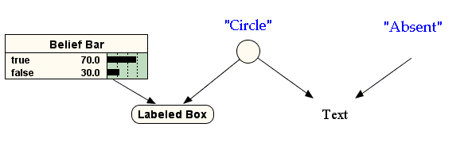

| NORSYS SOFTWARE © 2012 | NETICA API | JAVA VERSION 5.04 |
|
|||||||||
| PREV CLASS NEXT CLASS | FRAMES NO FRAMES | ||||||||
| SUMMARY: INNER | FIELD | CONSTR | METHOD | DETAIL: FIELD | CONSTR | METHOD | ||||||||
java.lang.Object
|
+--java.awt.Component
|
+--java.awt.Container
|
+--javax.swing.JComponent
|
+--javax.swing.JPanel
|
+--norsys.netica.gui.NetPanel
A javax.swing.JPanel for displaying a net. The net's appearance is similar to that in Netica Application (TM). For instance:
The NetPanel is a container for NodePanels and draws links between the NodePanels.
You may freely change its appearance (background and foreground Colors, border styles, etc.), just as you would any JPanel.
Several static variables are provided for controlling some aspects of the NetPanels appearance. Feel free to modify them.
| Inner classes inherited from class javax.swing.JPanel |
javax.swing.JPanel.AccessibleJPanel |
| Inner classes inherited from class javax.swing.JComponent |
javax.swing.JComponent.AccessibleJComponent |
| Inner classes inherited from class java.awt.Container |
java.awt.Container.AccessibleAWTContainer |
| Inner classes inherited from class java.awt.Component |
java.awt.Component.AccessibleAWTComponent |
| Field Summary | |
static java.awt.Color |
defaultBackgroundColor
The background color of this NetPanel upon construction. |
static java.awt.Color |
defaultForegroundColor
The foreground color of this NetPanel upon construction. |
static java.awt.Color |
defaultLinkColor
The color of any links drawn in this NetPanel. |
static int |
defaultLinkPolicy
One of LINK_POLICY_NONE, LINK_POLICY_BELOW, or LINK_POLICY_ABOVE. |
static int |
defaultLinkWidth
The width of the arrow shafts used in displaying links. |
static int |
LINK_POLICY_ABOVE
Display the net's links, such that, should they overlap any NodePanels, the links appear above the nodes. |
static int |
LINK_POLICY_BELOW
Display the net's links, such that, should they overlap any NodePanels, the nodes appear above the links. |
static int |
LINK_POLICY_NONE
Do not display the net's links. |
| Fields inherited from class javax.swing.JComponent |
accessibleContext, listenerList, TOOL_TIP_TEXT_KEY, ui, UNDEFINED_CONDITION, WHEN_ANCESTOR_OF_FOCUSED_COMPONENT, WHEN_FOCUSED, WHEN_IN_FOCUSED_WINDOW |
| Fields inherited from class java.awt.Component |
BOTTOM_ALIGNMENT, CENTER_ALIGNMENT, LEFT_ALIGNMENT, RIGHT_ALIGNMENT, TOP_ALIGNMENT |
| Fields inherited from interface java.awt.image.ImageObserver |
ABORT, ALLBITS, ERROR, FRAMEBITS, HEIGHT, PROPERTIES, SOMEBITS, WIDTH |
| Constructor Summary | |
NetPanel(Net net,
int nodeStyle)
Creates a new NetPanel for displaying the given net. |
|
| Method Summary | |
void |
addListenerToAllComponents(java.util.EventListener eventListener)
Add the given EventListener to this object and, if it is a Container, to all RecursingEventListeners it contains. |
void |
eventOccurred(NeticaEvent event)
A call-back method that Netica will call to indicate an event occurred. |
java.util.Vector |
getLinkGraphics()
Returns a collection of LinkGraphic objects, one for each link in the Net. |
Net |
getNet()
Return the Net that this NetPanel represents. |
NodePanel[] |
getNodePanels()
Returns the list of NodePanels contained by this NetPanel. |
NodeList |
getNodesWithDisplayMode(int displayMode)
Returns the list of Nodes in this NetPanel that are in the display mode. |
void |
paintComponent(java.awt.Graphics g)
Overrides javax.swing.JComponent.paintComponent() to draw link arrows on this JPanel. |
void |
refreshDataDisplayed()
Refresh all the data in this graphical Component, so that it correctly represents the current state of the Netica object it represents. |
void |
remove(java.awt.Component comp)
Be sure to call super.remove(component), if you override this. |
void |
removeListenerFromAllComponents(java.util.EventListener eventListener)
Remove the given EventListener from this object and, if it is a Container, from all RecursingEventListeners it contains. |
void |
replaceNodePanel(NodePanel original,
NodePanel replacement)
Replace one NodePanel in this NetPanel with another one representing the same Node. |
void |
setLinkPolicy(int linkPolicy)
Sets the policy for displaying links, that is, whether they appear above or below NodePanels, or not at all. |
void |
setNodeStyle(NodeList nodeList,
int newStyle)
Change the display mode style of all the nodes in nodeList to newStyle. |
void |
setSubnet(NodeList nodeList)
Display only those nodes in nodeList. |
| Methods inherited from class javax.swing.JPanel |
getAccessibleContext, getUIClassID, paramString, updateUI |
| Methods inherited from class javax.swing.JComponent |
addAncestorListener, addNotify, addPropertyChangeListener, addPropertyChangeListener, addVetoableChangeListener, computeVisibleRect, contains, createToolTip, disable, enable, firePropertyChange, firePropertyChange, firePropertyChange, firePropertyChange, firePropertyChange, firePropertyChange, firePropertyChange, firePropertyChange, firePropertyChange, fireVetoableChange, getActionForKeyStroke, getActionMap, getAlignmentX, getAlignmentY, getAutoscrolls, getBorder, getBounds, getClientProperty, getComponentGraphics, getConditionForKeyStroke, getDebugGraphicsOptions, getGraphics, getHeight, getInputMap, getInputMap, getInputVerifier, getInsets, getInsets, getListeners, getLocation, getMaximumSize, getMinimumSize, getNextFocusableComponent, getPreferredSize, getRegisteredKeyStrokes, getRootPane, getSize, getToolTipLocation, getToolTipText, getToolTipText, getTopLevelAncestor, getVerifyInputWhenFocusTarget, getVisibleRect, getWidth, getX, getY, grabFocus, hasFocus, hide, isDoubleBuffered, isFocusCycleRoot, isFocusTraversable, isLightweightComponent, isManagingFocus, isMaximumSizeSet, isMinimumSizeSet, isOpaque, isOptimizedDrawingEnabled, isPaintingTile, isPreferredSizeSet, isRequestFocusEnabled, isValidateRoot, paint, paintBorder, paintChildren, paintImmediately, paintImmediately, print, printAll, printBorder, printChildren, printComponent, processComponentKeyEvent, processFocusEvent, processKeyBinding, processKeyEvent, processMouseMotionEvent, putClientProperty, registerKeyboardAction, registerKeyboardAction, removeAncestorListener, removeNotify, removePropertyChangeListener, removePropertyChangeListener, removeVetoableChangeListener, repaint, repaint, requestDefaultFocus, requestFocus, resetKeyboardActions, reshape, revalidate, scrollRectToVisible, setActionMap, setAlignmentX, setAlignmentY, setAutoscrolls, setBackground, setBorder, setDebugGraphicsOptions, setDoubleBuffered, setEnabled, setFont, setForeground, setInputMap, setInputVerifier, setMaximumSize, setMinimumSize, setNextFocusableComponent, setOpaque, setPreferredSize, setRequestFocusEnabled, setToolTipText, setUI, setVerifyInputWhenFocusTarget, setVisible, unregisterKeyboardAction, update |
| Methods inherited from class java.awt.Container |
add, add, add, add, add, addContainerListener, addImpl, countComponents, deliverEvent, doLayout, findComponentAt, findComponentAt, getComponent, getComponentAt, getComponentAt, getComponentCount, getComponents, getLayout, insets, invalidate, isAncestorOf, layout, list, list, locate, minimumSize, paintComponents, preferredSize, printComponents, processContainerEvent, processEvent, remove, removeAll, removeContainerListener, setLayout, validate, validateTree |
| Methods inherited from class java.awt.Component |
action, add, addComponentListener, addFocusListener, addHierarchyBoundsListener, addHierarchyListener, addInputMethodListener, addKeyListener, addMouseListener, addMouseMotionListener, bounds, checkImage, checkImage, coalesceEvents, contains, createImage, createImage, disableEvents, dispatchEvent, enable, enableEvents, enableInputMethods, getBackground, getBounds, getColorModel, getComponentOrientation, getCursor, getDropTarget, getFont, getFontMetrics, getForeground, getGraphicsConfiguration, getInputContext, getInputMethodRequests, getLocale, getLocation, getLocationOnScreen, getName, getParent, getPeer, getSize, getToolkit, getTreeLock, gotFocus, handleEvent, imageUpdate, inside, isDisplayable, isEnabled, isLightweight, isShowing, isValid, isVisible, keyDown, keyUp, list, list, list, location, lostFocus, mouseDown, mouseDrag, mouseEnter, mouseExit, mouseMove, mouseUp, move, nextFocus, paintAll, postEvent, prepareImage, prepareImage, processComponentEvent, processHierarchyBoundsEvent, processHierarchyEvent, processInputMethodEvent, processMouseEvent, remove, removeComponentListener, removeFocusListener, removeHierarchyBoundsListener, removeHierarchyListener, removeInputMethodListener, removeKeyListener, removeMouseListener, removeMouseMotionListener, repaint, repaint, repaint, resize, resize, setBounds, setBounds, setComponentOrientation, setCursor, setDropTarget, setLocale, setLocation, setLocation, setName, setSize, setSize, show, show, size, toString, transferFocus |
| Methods inherited from class java.lang.Object |
clone, equals, finalize, getClass, hashCode, notify, notifyAll, wait, wait, wait |
| Field Detail |
| public static final int LINK_POLICY_NONE |
| public static final int LINK_POLICY_BELOW |
| public static final int LINK_POLICY_ABOVE |
| public static java.awt.Color defaultBackgroundColor |
| public static java.awt.Color defaultForegroundColor |
| public static java.awt.Color defaultLinkColor |
| public static int defaultLinkPolicy |
| public static int defaultLinkWidth |
| Constructor Detail |
| public NetPanel ( |
| ) throws Exception |
nodeStyle is the type of style to initially assign to all the displayed nodes. You can later replace individual NodePanels with new ones of different style using replaceNodePanel.
Parameters:
| Net | net | The net to be diplayed. | ||
| int | nodeStyle | One of: NODE_STYLE_AUTO_SELECT, NODE_STYLE_LABELED_BOX, NODE_STYLE_CIRCLE, NODE_STYLE_ABSENT, NODE_STYLE_BELIEF_BARS, or NODE_STYLE_TEXT. |
The following program will graphicallly display the net whose fileNameis given as the first parameter on the command lineimport norsys.netica.*; import norsys.netica.gui.*; import javax.swing.*; class DrawNet extends JFrame{ public DrawNet( String netName ) throws Exception { Net net = new Net( new Streamer( netName ) ); net.compile(); //optional NetPanel netPanel = new NetPanel( net, NodePanel.NODE_STYLE_BELIEF_BARS ); getContentPane().add( new JScrollPane(netPanel ) ); //adds the NetPanel, within a JScrollPane, to ourself netPanel.setLinkPolicy( NetPanel.LINK_POLICY_BELOW); setDefaultCloseOperation( JFrame.EXIT_ON_CLOSE ); setSize( 800, 500 );// or you may prefer: setSize( getPreferredSize() ); show(); } public static void main( String[] args ) { try { Environ env = new Environ( null ); DrawNet dn = new DrawNet( args[0] ); } catch ( Exception e ) { e.printStackTrace(); } } }
| Method Detail |
| public void addListenerToAllComponents ( |
| ) |
RecursingEventListener| EventListener | eventListener | The listener to be added to this component and to any of its children that are also RecursingEventListeners. |
| removeListenerFromAllComponents | removes it instead |
addListenerToAllComponents in interface RecursingEventListener| public void eventOccurred ( |
| ) |
| NeticaEvent | event | An object with information about the event that occurred. |
eventOccurred in interface NeticaListener| public Net getNet ( ) |
| public NodePanel[] getNodePanels ( ) |
| public NodeList getNodesWithDisplayMode ( |
| ) throws Exception |
displayMode must be one of NodePanel.DISPLAY_MODE_GRAYED, NodePanel.DISPLAY_MODE_NORMAL, or NodePanel.DISPLAY_MODE_HILITED, otherwise an exception will be thrown.
Parameters:
| int | displayMode | One of NodePanel.DISPLAY_MODE_GRAYED, NodePanel.DISPLAY_MODE_NORMAL, or NodePanel.DISPLAY_MODE_HILITED |
NodePanel.setDisplayMode | Set the display state of a particular NodePanel |
| public void paintComponent ( |
| ) |
NOTICE:If you override this method, you probably want to call super.paintComponent() in your method to ensure that the net's links are drawn.
Parameters:
| java.awt.Graphics | g | The AWT/SWING Graphics context. |
paintComponent in class javax.swing.JComponent| public void refreshDataDisplayed ( ) throws NeticaException |
DataDisplayerIf this is a Container object, then it should arrange to invoke the refreshDataDisplayed method of all the DataDisplayer objects it contains.
Version:
refreshDataDisplayed in interface DataDisplayer| public void remove ( |
| ) |
remove in class java.awt.Container| public void removeListenerFromAllComponents ( |
| ) |
RecursingEventListener| EventListener | eventListener | The listener to be removed from this component and from any of its children that are also RecursingEventListeners. |
| addListenerToAllComponents | adds it instead |
removeListenerFromAllComponents in interface RecursingEventListener| public Vector getLinkGraphics ( ) |
WARNING:When replaceNodePanel is called, a NetPanel will replace all of its LinkGraphic objects with new ones.
Version:
| public void replaceNodePanel ( |
| ) throws NeticaException |
original should be a NodePanel currently in this NetPanel. Otherwise, an exception will be thrown.
replacement must be a NodePanel representing the same Node that original represents. Otherwise, an exception will be thrown.
WARNING:This method causes the NetPanel to replace all of its LinkGraphic objects with new ones.
Parameters:
| NodePanel | original | The NodePanel to be replaced. | ||
| NodePanel | replacement | The NodePanel to be inserted. |
| public void setLinkPolicy ( |
| ) |
linkPolicy should be one of LINK_POLICY_NONE, LINK_POLICY_BELOW, or LINK_POLICY_ABOVE.
Parameters:
| int | linkPolicy | One of LINK_POLICY_NONE, LINK_POLICY_BELOW, or LINK_POLICY_ABOVE. |
| public void setSubnet ( |
| ) throws Exception |
The NetPanel will still retain all the NodePanels for this net, it will just only display those whose Nodes are in nodeList.
Only the links between the nodes in nodeList will be drawn.
Parameters:
| NodeList | nodeList | The list of nodes to display. |
| public void setNodeStyle ( |
| ) throws Exception |
nodeList may be null in which case all the net's nodes will have their style set.
newStyle should be one of:
| NODE_STYLE_AUTO_SELECT | Netica-J will choose an appropriate style for you from amongst the following. | |
| NODE_STYLE_LABELED_BOX | Node title/name in rounded box | |
| NODE_STYLE_CIRCLE | Plain circle | |
| NODE_STYLE_ABSENT | Empty space (but links to/from it still appear) | |
| NODE_STYLE_BELIEF_BARS | Netica (TM) style belief bars, a very popular styl |
Each of the above is depicted in the following diagram:

Parameters:
| NodeList | nodeList | The list of nodes to change. If null, then this is the same as a list of all of the net's nodes. | ||
| int | nodeStyle | A valid NODE_STYLE_X constant. |
|
|||||||||
| PREV CLASS NEXT CLASS | FRAMES NO FRAMES | ||||||||
| SUMMARY: INNER | FIELD | CONSTR | METHOD | DETAIL: FIELD | CONSTR | METHOD | ||||||||